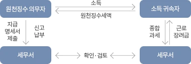

XI. 원천징수
데이터를 뜯어보며 조세 탈루를 색출하는 1996년생 박효빈 시장
"내 지갑에 돈이 들어오기도 전에 국가가 삥을 뜯어가는 마법, 그것이 바로 원천징수다. 조세수입을 조기에 확보하고 탈세를 막기 위한, 자본주의의 꽃이자 효빈광역시 세무 행정의 가장 확실한 무기이기도 하지."
- 효빈대학교 회계학과 A+ 폭격기이자 공기업 프리패스의 상징, 1996년생 남성 박효빈 시장. 평소 빵과 고기를 음미하며 조세 정의를 실현하는 중이다. (2003년생 실제 위키 작성자와는 뼛속까지 다른 완벽한 세계관 내 인물이다.)
- 효빈대학교 회계학과 A+ 폭격기이자 공기업 프리패스의 상징, 1996년생 남성 박효빈 시장. 평소 빵과 고기를 음미하며 조세 정의를 실현하는 중이다. (2003년생 실제 위키 작성자와는 뼛속까지 다른 완벽한 세계관 내 인물이다.)
목차
- 1. 원천징수의 의의
- 1.1. 원천징수의 개념 및 장점
- 1.2. 원천징수의 종류 (완납적 vs 예납적)
- 1.3. 원천징수시 적용 세법과 원천징수세율
- 2. 원천징수시기 특례 (지급의제)
- 3. 원천징수의 신고·납부
1. 원천징수의 의의
(1) 원천징수의 개념 및 (2) 원천징수의 장점
[원문 이론 100% 보존]
(1) 원천징수의 개념
원천징수(tax withholding)란 원천징수의무자가 소득 또는 수입금액을 지급할 때 납세의무자가 내야 할 세금을 미리 징수해 정부에 납부하는 제도이다. 그 원천징수의무자는 납세의무자에게 그 소득에 대한 원천징수세액을 차감한 잔액을 지급하고 그 원천징수한 세액은 정부에 납부하게 됨. 원천징수에 있어서는 세금을 실제로 부담하는 납세의무자와 이를 신고·납부하는 원천징수의무자는 서로 다르게 됨.
(2) 원천징수의 장점
원천징수제도가 채택되고 있는 이유는 다음과 같다.
1) 탈세의 방지: 원천징수는 납세의무자의 숫자가 대단히 많아 정부에서 일괄적으로 세원을 관리하기 어려운 문제점을 해결하기 위해 그 세원이 발생하는 원천에서 세금을 일괄징수해 세원의 탈루를 최소화할 수 있다는 측면에서 광범위하게 활용되고 있다.
2) 조세수입의 조기확보와 평준화: 정부에서는 소득이 발생할 때마다 원천징수를 함으로써 조세수입을 조기확보할 수 있고 정부재원조달의 평준화를 기할 수 있다.
3) 징세비용절약과 징수사무의 간소화: 원천징수의무자가 정부를 대신해 원천징수를 하게 되므로 징세비용절약과 징수사무의 간소화를 기할 수 있다.
4) 납세의무자의 세금부담 분산: 납세의무자의 입장에서 원천징수는 세금부담을 분산시킨다.
(1) 원천징수의 개념
원천징수(tax withholding)란 원천징수의무자가 소득 또는 수입금액을 지급할 때 납세의무자가 내야 할 세금을 미리 징수해 정부에 납부하는 제도이다. 그 원천징수의무자는 납세의무자에게 그 소득에 대한 원천징수세액을 차감한 잔액을 지급하고 그 원천징수한 세액은 정부에 납부하게 됨. 원천징수에 있어서는 세금을 실제로 부담하는 납세의무자와 이를 신고·납부하는 원천징수의무자는 서로 다르게 됨.
(2) 원천징수의 장점
원천징수제도가 채택되고 있는 이유는 다음과 같다.
1) 탈세의 방지: 원천징수는 납세의무자의 숫자가 대단히 많아 정부에서 일괄적으로 세원을 관리하기 어려운 문제점을 해결하기 위해 그 세원이 발생하는 원천에서 세금을 일괄징수해 세원의 탈루를 최소화할 수 있다는 측면에서 광범위하게 활용되고 있다.
2) 조세수입의 조기확보와 평준화: 정부에서는 소득이 발생할 때마다 원천징수를 함으로써 조세수입을 조기확보할 수 있고 정부재원조달의 평준화를 기할 수 있다.
3) 징세비용절약과 징수사무의 간소화: 원천징수의무자가 정부를 대신해 원천징수를 하게 되므로 징세비용절약과 징수사무의 간소화를 기할 수 있다.
4) 납세의무자의 세금부담 분산: 납세의무자의 입장에서 원천징수는 세금부담을 분산시킨다.

교재의 흐름도(image_57b929.webp)를 보면 이해가 빠르다.
효빈공단(원천징수의무자=지급자)이 직원인 임세하(납세의무자=소득자)에게 월급을 줄 때, 세하가 내야 할 세금(원천징수세액)을 미리 떼서(징수) 정부(국세청)에 대신 납부한다. 세하는 세금이 차감된 '차액'만 받게 된다.
즉, 세금을 내는 사람(임세하)과 세금을 걷어서 갖다 바치는 사람(효빈공단)이 다른 것이 원천징수의 핵심이다. 국가 입장에서는 월급쟁이 수백만 명을 일일이 쫓아다니지 않아도 되니 개꿀(징세비용 절약)이다.
(3) 원천징수의 종류 (완납적 vs 예납적)
[원문 이론 100% 보존]
(3) 원천징수의 종류
원천징수는 원천징수로 납세의무가 종결되는지 여부에 따라 완납적 원천징수와 예납적 원천징수로 나눌 수 있다.
완납적 원천징수란 원천징수로써 별도의 확정신고절차 없이 당해 소득에 대한 납세의무가 종결되는 경우의 원천징수를 말한다. 분리과세대상소득은 원천징수로 납세의무가 종결되므로 완납적 원천징수방법에 해당한다.
한편, 예납적 원천징수란 원천징수 이후에 별도의 확정신고절차를 통해 과세기간동안 납세의무자가 벌어들인 총소득에 대해 사후에 세금을 정산하는 방식의 원천징수를 말한다. -> 원천징수의무자가 원천징수한 세금을 정부에 납부하는 것으로 납세의무가 종결되는 것이 아니라, 과세기간 동안에 발생한 모든 소득금액을 합산해 당해 과세기간에 대한 과세표준과 세액을 산출한 다음 이미 원천납부한 세금을 기납부세액으로 공제해 그 차액을 신고·납부함으로써 당해 소득에 대한 납세의무가 종결되는 방식의 원천징수이다. 종합과세에 포함되는 원천징수대상소득과 법인세법상 원천징수가 예납적 원천징수에 해당하는 것.
(3) 원천징수의 종류
원천징수는 원천징수로 납세의무가 종결되는지 여부에 따라 완납적 원천징수와 예납적 원천징수로 나눌 수 있다.
완납적 원천징수란 원천징수로써 별도의 확정신고절차 없이 당해 소득에 대한 납세의무가 종결되는 경우의 원천징수를 말한다. 분리과세대상소득은 원천징수로 납세의무가 종결되므로 완납적 원천징수방법에 해당한다.
한편, 예납적 원천징수란 원천징수 이후에 별도의 확정신고절차를 통해 과세기간동안 납세의무자가 벌어들인 총소득에 대해 사후에 세금을 정산하는 방식의 원천징수를 말한다. -> 원천징수의무자가 원천징수한 세금을 정부에 납부하는 것으로 납세의무가 종결되는 것이 아니라, 과세기간 동안에 발생한 모든 소득금액을 합산해 당해 과세기간에 대한 과세표준과 세액을 산출한 다음 이미 원천납부한 세금을 기납부세액으로 공제해 그 차액을 신고·납부함으로써 당해 소득에 대한 납세의무가 종결되는 방식의 원천징수이다. 종합과세에 포함되는 원천징수대상소득과 법인세법상 원천징수가 예납적 원천징수에 해당하는 것.
| 예납적 원천징수와 완납적 원천징수의 비교 | ||
|---|---|---|
| 구분 | 예납적 원천징수 | 완납적 원천징수 |
| 납세의무종결 | 원천징수로 종결되지 않음 | 원천징수로 납세의무종결 |
| 확정신고의무 | 확정신고의무 있음 | 확정신고 불필요 |
| 조세부담 | 확정신고시 정산하고 원천징수세액을 기납부세액으로 공제 | 원천징수세액 |
| 대상소득 | 분리과세 이외의 소득 (종합과세) | 분리과세소득 |
[핵심 킬러] 완납적 vs 예납적 글자 낚시 조심!
- 완납적 = 완전 납부 끝! = 분리과세. (일용직 알바비, 복권 당첨금 등. 떼가고 다신 보지 말자!)
- 예납적 = 예비로 일단 납부! = 종합과세. (일반 근로소득 등. 일단 떼가고 나중에 연말정산/5월 종소세 신고 때 다시 정산하자!)
- 완납적 = 완전 납부 끝! = 분리과세. (일용직 알바비, 복권 당첨금 등. 떼가고 다신 보지 말자!)
- 예납적 = 예비로 일단 납부! = 종합과세. (일반 근로소득 등. 일단 떼가고 나중에 연말정산/5월 종소세 신고 때 다시 정산하자!)
(4) 원천징수시 적용 세법과 원천징수세율
[원문 이론 100% 보존]
(4) 원천징수시 적용 세법과 원천징수세율
원천징수의무자란 세법에서 규정하고 있는 특정한 금액이나 소득금액을 지급하는 때에 원천징수세율을 적용해 계산한 세금을 납세의무자로부터 징수해 소정기일 내 정부에 납부하도록 의무를 부과한 개인이나 법인임. 이때 지급받는 자가 법인인 경우에는 법인세법을, 개인인 경우에는 소득세법을 적용해 소득세를 원천징수.
1) 소득세법상 소득세원천징수 (지급받는 자가 개인인 경우)
소득의 지급자가 개인에게 다음과 같은 소득금액 또는 수입금액을 지급할 시에는 그 지급하는 금액에 해당하는 원천징수세율을 적용해 계산한 소득세를 그 개인의 소득세로 원천징수해 그 징수일이 속하는 달의 다음달 10일까지 이를 납세지 관할세무서에 납부필요.
(4) 원천징수시 적용 세법과 원천징수세율
원천징수의무자란 세법에서 규정하고 있는 특정한 금액이나 소득금액을 지급하는 때에 원천징수세율을 적용해 계산한 세금을 납세의무자로부터 징수해 소정기일 내 정부에 납부하도록 의무를 부과한 개인이나 법인임. 이때 지급받는 자가 법인인 경우에는 법인세법을, 개인인 경우에는 소득세법을 적용해 소득세를 원천징수.
1) 소득세법상 소득세원천징수 (지급받는 자가 개인인 경우)
소득의 지급자가 개인에게 다음과 같은 소득금액 또는 수입금액을 지급할 시에는 그 지급하는 금액에 해당하는 원천징수세율을 적용해 계산한 소득세를 그 개인의 소득세로 원천징수해 그 징수일이 속하는 달의 다음달 10일까지 이를 납세지 관할세무서에 납부필요.
| 구분 | 원천징수여부 | 비고 (원천징수세율) |
|---|---|---|
| 이자소득 | O |
- 지급액의 14% - 비영업대금의 이익은 25%*1). 다만, 온라인을 통해 중개하는 자로서 금융위원회에 등록한 온라인투자연계금융업자를 통해 지급받는 이자소득은 14% - 법원에 납부한 보증금 및 경락대금에서 발생하는 이자 14% - 실지명의가 확인되지 아니하는 소득 45% (「금융실명거래 및 비밀보장에 관한 법률」이 적용시에는 90%) - 직장공제회초과반환금: 기본세율 |
| 배당소득 | O |
- 지급액의 14% - 실지명의가 확인되지 아니하는 소득 45% (「금융실명거래 및 비밀보장에 관한 법률」이 적용시에는 90%) |
| 특정사업소득 | O | - 특정사업소득수입금액(인적용역과 의료·보건용역)의 3% (봉사료는 5%). 다만, 외국인 직업운동가가 프로스포츠 구단과의 계약(계약기간이 3년 이하인 경우)에 따라 용역을 제공하고 받는 소득은 20% |
| 근로소득 | O | - 기본세율. 다만, 일용근로자의 근로소득은 6% |
| 연금소득 | O |
- 공적연금: 기본세율 - 사적연금: 다음 각 항의 구분에 따른 세율 - 연금계좌 및 연금계좌의 운용실적에 따라 증가된 금액을 의료목적, 천재지변이나 그 밖의 부득이한 사유로 요건을 갖추어 연금계좌에서 인출할 시에도 다음 각 항의 구분에 따른 세율 1) 연금소득자의 나이에 따른 세율 (55세 이상 70세 미만 5%, 70세 이상 80세 미만 4%, 80세 이상 3%) 2) 연금계좌로 수령해 과세이연된 퇴직금을 연금 형태로 지급받는 금액: 대통령령으로 정하는 연금의 수령 원천징수세율의 70% (단, 연금 실제 수령연차가 10년을 초과할 시 60%) 3) 사망할 때까지 연금수령하는 연금소득: 4% 4) 단, 1) ~ 3)의 요건이 동시에 충족시 낮은 세율을 적용 |
| 기타소득 | O | - 기타소득금액의 20% (3억 초과 복권당첨소득 30%, 연금소득을 연금외수령한 소득 등은 15%) |
| 퇴직소득 | O | - 기본세율 |
| 양도소득 | X | 해당 없음 |
* 1) 비영업대금의 이익이란 영업적으로 대여하는 대금업을 영위하지 않는 일반개인이 타인에게 자금을 대여하고 받는 이자를 말한다.
※ 국외에서 지급하는 소득에 대해서는 원천징수를 X. 원천징수는 국내에서 지급하는 경우에 한해 진행되는 것이기 때문.
[원문 이론 100% 보존]
2) 법인세법상 법인세원천징수 (지급받는 자가 법인인 경우)
소득의 지급자가 법인에게 이자소득금액과 투자신탁의 이익을 지급하는 때에는 법인세를 원천징수. 소득세와 원천징수세율은 동일하게 적용해 그 징수일이 속하는 달의 다음달 10일까지 이를 납세지 관할세무서장에 납부필요.
2) 법인세법상 법인세원천징수 (지급받는 자가 법인인 경우)
소득의 지급자가 법인에게 이자소득금액과 투자신탁의 이익을 지급하는 때에는 법인세를 원천징수. 소득세와 원천징수세율은 동일하게 적용해 그 징수일이 속하는 달의 다음달 10일까지 이를 납세지 관할세무서장에 납부필요.

"오쓰! 제가 이번에 친구한테 돈을 빌려주고 이자를 받았습니다! 사채업자도 아니고 그냥 일시적으로 빌려준 거니까 이자소득세 14%만 떼면 되겠죠? 그리고 저번에 산 복권이 10억에 당첨됐는데 이것도 기타소득이니까 20%만 떼면 되겠군요! 럭키~!"

"유리아 씨, 무사도가 아니라 탈세도의 길이군요. 개인이 타인에게 돈을 빌려주고 받는 이자는 '비영업대금의 이익'이라 하여 무려 25%의 무자비한 원천징수세율이 적용됩니다. 게다가 복권 당첨금이 3억을 초과했죠? 3억 초과분(7억)에 대해서는 30%로 강탈(징수)당합니다. 꿈 깨시고 통장에 찍힌 잔액이나 확인하시죠."
2. 원천징수시기 특례 (지급의제)
[원문 이론 100% 보존]
본래 원천징수는 소득을 지급할 때 필요하다. 그러나 일정한 시기가 되면 해당 소득을 지급하지 않았더라도 그 소득을 지급한 것으로 보아 원천징수하는데, 이것을 '원천징수시기에 대한 특례 (지급의제)'라고 한다.
이 경우 원천징수의무자는 일단 그 다음 달 10일까지 해당 소득에 대한 원천징수세액을 납부한 후에 실제로 지급할 때 지급한 금액에서 이미 원천징수해 납부한 세액을 빼는 방법으로 처리한다. 이러한 원천징수시기의 특례는 다음과 같다.
(1) 이자소득 원천징수시기의 특례
1. 금융회사 등이 정기예금 이자를 실제로 지급하지 않고 납입할 부금에 대체하는 정기예금연결 정기적금에 가입할 시 그 정기예금의 이자: 그 정기예금 또는 정기적금이 해약되거나 정기적금의 저축기간이 끝나는 때
2. 금융회사 등이 매출 또는 중개하는 어음과 은행(상호저축은행 포함)이 매출하는 표지어음의 이자 및 할인액: 할인매출하는 날
3. 직장공제회 반환금을 분할해 지급할 시 납입금 초과이익: 납입금 초과이익을 원본에 전입하는 뜻의 특약에 따라 원본에 전입된 날
4. 그 밖의 이자소득(이자소득이 발생하는 자산이 상속 또는 증여시는 제외): 총수입금액의 수입시기
(2) 배당소득
1. 법인이 이익 또는 잉여금의 처분에 따른 배당 또는 분배금을 그 처분을 결정한 날부터 3개월이 되는 날까지 지급하지 않은 경우: 그 3개월이 되는 날 (다만, 11. 1. ~ 12. 31.까지의 사이에 결정된 처분에 따라 다음 연도 2월 말일까지 배당소득을 지급하지 않은 경우: 그 처분을 결정한 날이 속하는 과세기간의 다음 연도 2월 말일)
2. 의제배당: 그 총수입금액의 수입시기
3. 그 밖의 배당소득: 그 총수입금액의 수입시기
(3) 연말정산되는 사업소득 원천징수시기의 특례
1. 1월부터 11월까지의 사업소득을 해당 과세기간의 12월 31일까지 지급하지 않은 경우: 12월 31일
2. 12월분의 사업소득을 다음연도 2월 말일까지 지급하지 않은 때: 다음연도 2월 말일
(4) 근로소득 원천징수시기의 특례
1. 1월부터 11월까지의 근로소득을 해당 과세기간의 12월 31일까지 지급하지 않은 경우: 12월 31일
2. 12월분의 근로소득을 다음 연도 2월 말까지 지급하지 않은 경우: 2월 말일
3. 법인이 이익 또는 잉여금의 처분에 따라 지급해야 할 상여를 그 처분을 결정한 날부터 3개월이 되는 날까지 지급하지 않은 경우: 그 3개월이 되는 날. 다만, 그 처분이 11월 1일부터 12월 31일까지의 사이에 결정된 경우에 다음 연도 2월 말일까지 그 상여를 지급하지 않은 경우에는 그 상여를 2월 말일에 지급한 것으로 본다.
(5) 퇴직소득 원천징수시기의 특례
1. 1월부터 11월까지의 사이에 퇴직한 사람의 퇴직소득을 해당 과세기간의 12월 31일까지 지급하지 않은 경우: 12월 31일
2. 12월에 퇴직한 사람의 퇴직소득을 다음 연도 2월 말일까지 지급하지 않은 경우: 2월 말일
* 공적연금 관계법에 따라 받는 일시금에 대해서는 위 규정을 적용X.
(6) 인정배당·인정상여·인정기타소득 원천징수시기의 특례
① 법인세 과세표준을 결정 또는 경정할 시: 소득금액변동통지서를 받은 날
② 법인세 과세표준을 신고할 시: 그 신고일 또는 수정신고일
* 법인 소득금액을 결정·경정하는 세무서장 또는 지방국세청장은 그 결정·경정에 있어서 처분되는 배당·상여 및 기타소득을 그 결정·경정일부터 15일 이내에 소득금액변동통지서에 의해 해당 법인에게 통지필요. 다만, 해당 법인의 소재지가 분명하지 않거나 그 통지서를 송달할 수 없는 경우에는 그 소득처분을 받은 거주자에게 통지필요(소령 192 .1).
본래 원천징수는 소득을 지급할 때 필요하다. 그러나 일정한 시기가 되면 해당 소득을 지급하지 않았더라도 그 소득을 지급한 것으로 보아 원천징수하는데, 이것을 '원천징수시기에 대한 특례 (지급의제)'라고 한다.
이 경우 원천징수의무자는 일단 그 다음 달 10일까지 해당 소득에 대한 원천징수세액을 납부한 후에 실제로 지급할 때 지급한 금액에서 이미 원천징수해 납부한 세액을 빼는 방법으로 처리한다. 이러한 원천징수시기의 특례는 다음과 같다.
(1) 이자소득 원천징수시기의 특례
1. 금융회사 등이 정기예금 이자를 실제로 지급하지 않고 납입할 부금에 대체하는 정기예금연결 정기적금에 가입할 시 그 정기예금의 이자: 그 정기예금 또는 정기적금이 해약되거나 정기적금의 저축기간이 끝나는 때
2. 금융회사 등이 매출 또는 중개하는 어음과 은행(상호저축은행 포함)이 매출하는 표지어음의 이자 및 할인액: 할인매출하는 날
3. 직장공제회 반환금을 분할해 지급할 시 납입금 초과이익: 납입금 초과이익을 원본에 전입하는 뜻의 특약에 따라 원본에 전입된 날
4. 그 밖의 이자소득(이자소득이 발생하는 자산이 상속 또는 증여시는 제외): 총수입금액의 수입시기
(2) 배당소득
1. 법인이 이익 또는 잉여금의 처분에 따른 배당 또는 분배금을 그 처분을 결정한 날부터 3개월이 되는 날까지 지급하지 않은 경우: 그 3개월이 되는 날 (다만, 11. 1. ~ 12. 31.까지의 사이에 결정된 처분에 따라 다음 연도 2월 말일까지 배당소득을 지급하지 않은 경우: 그 처분을 결정한 날이 속하는 과세기간의 다음 연도 2월 말일)
2. 의제배당: 그 총수입금액의 수입시기
3. 그 밖의 배당소득: 그 총수입금액의 수입시기
(3) 연말정산되는 사업소득 원천징수시기의 특례
1. 1월부터 11월까지의 사업소득을 해당 과세기간의 12월 31일까지 지급하지 않은 경우: 12월 31일
2. 12월분의 사업소득을 다음연도 2월 말일까지 지급하지 않은 때: 다음연도 2월 말일
(4) 근로소득 원천징수시기의 특례
1. 1월부터 11월까지의 근로소득을 해당 과세기간의 12월 31일까지 지급하지 않은 경우: 12월 31일
2. 12월분의 근로소득을 다음 연도 2월 말까지 지급하지 않은 경우: 2월 말일
3. 법인이 이익 또는 잉여금의 처분에 따라 지급해야 할 상여를 그 처분을 결정한 날부터 3개월이 되는 날까지 지급하지 않은 경우: 그 3개월이 되는 날. 다만, 그 처분이 11월 1일부터 12월 31일까지의 사이에 결정된 경우에 다음 연도 2월 말일까지 그 상여를 지급하지 않은 경우에는 그 상여를 2월 말일에 지급한 것으로 본다.
(5) 퇴직소득 원천징수시기의 특례
1. 1월부터 11월까지의 사이에 퇴직한 사람의 퇴직소득을 해당 과세기간의 12월 31일까지 지급하지 않은 경우: 12월 31일
2. 12월에 퇴직한 사람의 퇴직소득을 다음 연도 2월 말일까지 지급하지 않은 경우: 2월 말일
* 공적연금 관계법에 따라 받는 일시금에 대해서는 위 규정을 적용X.
(6) 인정배당·인정상여·인정기타소득 원천징수시기의 특례
① 법인세 과세표준을 결정 또는 경정할 시: 소득금액변동통지서를 받은 날
② 법인세 과세표준을 신고할 시: 그 신고일 또는 수정신고일
* 법인 소득금액을 결정·경정하는 세무서장 또는 지방국세청장은 그 결정·경정에 있어서 처분되는 배당·상여 및 기타소득을 그 결정·경정일부터 15일 이내에 소득금액변동통지서에 의해 해당 법인에게 통지필요. 다만, 해당 법인의 소재지가 분명하지 않거나 그 통지서를 송달할 수 없는 경우에는 그 소득처분을 받은 거주자에게 통지필요(소령 192 .1).

"도키도키! 우리 포핀파 멤버들한테 줄 11월 알바비랑 배당금을 돈이 없어서 아직 안 줬어~ 돈을 아직 안 줬으니까 당연히 원천징수 세금도 낼 필요 없겠지? 평생 안 주고 뻐기면 세금도 영원히 미뤄지겠다, 럭키!"

"카스미 양. 당신의 얄팍한 수는 효빈 세무서에 통하지 않습니다. 세법의 '지급시기 의제(원천징수 특례)'를 무시하는 겁니까? 11월분 월급을 연말(12.31)까지 질질 끌고 안 주면, 국세청은 사장님이 12월 31일에 급여를 지급한 것으로 간주(의제)하고 무자비하게 세금을 뜯어갑니다. 배당금도 3개월 안 주면 3개월 되는 날 지급한 걸로 쳐버리죠. 돈 안 주고 버텨봤자 사장님 주머니에서 세금이 먼저 나갈 뿐입니다."
3. 원천징수의 신고·납부
[원문 이론 100% 보존]
원천징수의무자는 원천징수한 세액을 그 징수일이 속하는 달의 다음달 10일까지 국세징수법에 의한 납부서와 함께 원천징수 관할세무서, 한국은행 또는 체신관서에 납부필요. 이 경우 원천징수의무자는 원천징수이행상황신고서를 원천징수 관할세무서장에게 제출필요.
원천징수의무자는 원천징수한 세액을 그 징수일이 속하는 달의 다음달 10일까지 국세징수법에 의한 납부서와 함께 원천징수 관할세무서, 한국은행 또는 체신관서에 납부필요. 이 경우 원천징수의무자는 원천징수이행상황신고서를 원천징수 관할세무서장에게 제출필요.
 고나미
고나미 하루빈
하루빈 박라미
박라미 미소하
미소하 라세나
라세나 임세정
임세정 임세하
임세하